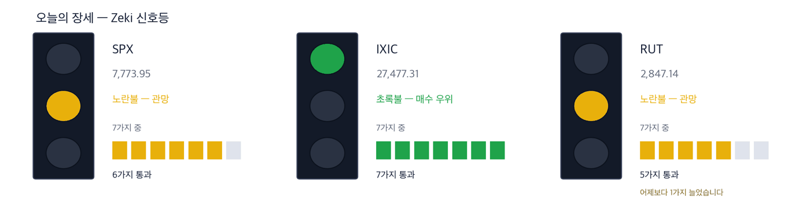

다우 51,268 +0.18% | 나스닥 종합 27,477 +1.05% | S&P 500 7,774 +0.66% | 러셀 2000 2,847 +0.50% | 10년 국채 5.31% | 제키 신호등 노란불 |

초록불은 매수 우위, 노란불은 관망, 빨간불은 매수 자제입니다. 칸은 7가지 조건 중 몇 가지를 만족하는지이고, 많을수록 오르는 종목이 넓게 퍼져 있습니다. 10월 5일 종가로 계산했습니다. 나스닥 종합은 7가지를 모두 만족해 초록불입니다. S&P 500은 6가지로 노란불입니다. 러셀 2000은 5가지로 10월 2일보다 1가지 늘어 노란불이 됐습니다. 세 지수를 합한 신호등은 노란불입니다.
관망 — 신호등이 뜻하는 자세입니다.
10월 5일 뉴욕에서 나스닥 종합이 1.05% 올라 27,477.31로 마쳤습니다. 사상 최고 종가입니다. S&P 500은 0.66%, 다우는 0.18% 올랐습니다. (IBD)
같은 날 10년물 금리는 장중 24년 만의 최고치를 찍었습니다. 마감은 5.31%입니다. 세계 채권값이 함께 내렸는데, 인공지능 투자 열기는 꺾이지 않았습니다. (월스트리트저널·IBD)
금리를 가장 먼저 맞은 곳은 부동산입니다. 상업용 부동산을 사기로 한 쪽이 조건을 바꾸지 않으면 계약을 깨겠다고 나섰습니다. (월스트리트저널)
브라질에서는 대선 1차 투표에서 우파 후보 플라비우 보우소나루가 47%로 1위를 했습니다. 여론조사보다 높았고, 브라질 주식이 미국 시장에서 급등했습니다. (IBD)
① 08:30 ET 무역 통계 뒤 10년물 금리가 더 오르는지 보십시오. 10월 5일 나스닥은 금리가 오르는데도 올랐습니다. 금리가 더 오르면 신고가 근처의 반도체주가 먼저 흔들립니다. (IBD)
② 브라질 증권사 XP는 하루 30.93% 올랐습니다. 1년 최고가 29.00달러 바로 아래에서 마쳤습니다. 21일 지수 이동평균보다 35% 위라 추격 매수는 위험이 큽니다. 결선 투표는 10월 25일입니다. (IBD·월스트리트저널)
③ TSMC가 매수 기준선을 넘어 485.80달러에 마쳤습니다. 10월 중순 3분기 실적 발표 전입니다. 마감에서 그 기준선을 지키는지가 첫 확인입니다. (IBD)
숫자 하나 — 10년물 금리 5.31%입니다. 서비스업 경기는 9월에도 넓혀 갔지만 속도가 줄었습니다. 공급관리협회(ISM) 서비스 지수는 54.9로 예상(55)에 조금 못 미쳤습니다. 응답 기업이 가장 많이 꼽은 걱정은 연료비였습니다. (IBD)
| 날짜 | 무엇을 보는가 | 시장에 어떤 영향 |
|---|---|---|
| 10월 6일(화) 08:30 ET | 미국 상품·서비스 무역 (8월분) | 나라·품목별 수입을 봅니다. 소비가 강하면 수입도 늘어 있을 것입니다 |
| 10월 7일(수) 14:00 ET | 미국 FOMC 의사록 (9월 15~16일 회의) | 2023년 뒤 첫 금리 인상을 한 회의입니다. 한 번 더 올리려는 쪽이 얼마나 강했는지가 드러나 국채금리가 먼저 움직입니다 |
| 10월 9일(금) 개장 전 | 델타항공 3분기 실적 | 실적 시즌의 첫 대형 발표입니다. 연료비를 얼마나 운임에 넘겼는지가 드러납니다 |
보우소나루 전 대통령의 아들 플라비우 보우소나루가 47%, 룰라 대통령이 45%를 얻었습니다. 여론조사보다 큰 차이였습니다. 결선 투표는 10월 25일입니다. (IBD·월스트리트저널)
그가 이기면 시장 친화 개혁과 금리 인하가 나올 수 있다는 기대가 붙었습니다. 미국에 상장된 브라질 주식 상장지수펀드(EWZ)는 13% 넘게 올랐습니다. (IBD)
| 종가 | 당일 | 한 주 | 20거래일 |
|---|---|---|---|
| 28.15달러 | +30.93% | +39.15% | +41.74% |
| 3개월 | 제키 강도 | 제키 자금 | 고점 대비 |
|---|---|---|---|
| +76.27% | 92 | A | -2.9% |
| 누가 | XP, 브라질 최대 독립 증권사이자 자산운용사입니다. |
| 무엇을 | 10월 5일 30.93% 올라 28.15달러에 마쳤습니다. 1년 최고가 29.00달러보다 2.9% 아래입니다. |
| 언제 | 10월 5일 대선 1차 투표 결과가 나온 첫 거래일입니다. |
| 어디서 | 나스닥 상장 종목입니다. |
| 왜 | 금리가 내리고 증시가 살아나면 거래 수수료와 운용 자금이 함께 늘기 때문입니다. |
| 어떻게 | 거래량이 50일 평균의 7.89배로 터지며 올랐습니다. 21일 지수 이동평균 20.85달러보다 35% 위입니다. |
판단 — 4가지를 모두 넘었습니다. 제키 강도 92, 20거래일 동안 41.7% 올랐습니다. 3개월과 2주 제키 자금이 모두 A입니다. 다만 하루 급등 뒤라 값이 흔들릴 수 있습니다.
확인 신호 — 1년 최고가 29.00달러를 넘어 마감하는 것입니다.
철회 기준 — 10월 5일 종가에서 8% 내린 25.90달러 아래로 마감하는 것입니다.
10년물이 24년 만의 고점을 찍은 날 나스닥은 신고가를 썼습니다. 세계 채권값 하락과 인공지능 투자 열기가 함께 시장을 흔들고 있습니다. (월스트리트저널)
TSMC는 실적 발표를 앞두고 기준선을 넘었습니다. 올해 이익이 61% 늘 것으로 예상됩니다. 고객은 엔비디아·AMD·브로드컴입니다. (IBD)
| 종가 | 당일 | 한 주 | 20거래일 |
|---|---|---|---|
| 485.80달러 | +2.75% | +7.27% | +13.26% |
| 3개월 | 제키 강도 | 제키 자금 | 고점 대비 |
|---|---|---|---|
| +12.31% | 84 | B | -0.3% |
| 누가 | TSMC, 세계 최대 반도체 위탁생산 회사입니다. |
| 무엇을 | 10월 5일 2.75% 올라 485.80달러에 마쳤습니다. 기준선 479달러를 넘었습니다. |
| 언제 | 10월 5일 종가 기준입니다. 3분기 실적은 10월 중순에 나옵니다. |
| 어디서 | 뉴욕증권거래소에 상장된 예탁증서입니다. |
| 왜 | 인공지능 칩을 설계하는 회사 대부분이 이 회사 공장에서 칩을 만들기 때문입니다. |
| 어떻게 | 1년 최고가보다 0.3% 아래입니다. 거래량은 50일 평균의 1.02배였습니다. |
판단 — 4가지 가운데 3가지를 넘었습니다. 다만 제키 강도가 84로 기준(90)에 못 미칩니다. 3개월 제키 자금은 B, 2주 자금은 A입니다.
확인 신호 — 10월 5일 넘어선 기준선 위에서 마감을 이어 가고, 제키 강도가 90을 넘는 것입니다.
철회 기준 — 10월 5일 넘어선 기준선 479달러 아래로 다시 마감하는 것입니다.
| 종가 | 당일 | 한 주 | 20거래일 |
|---|---|---|---|
| 631.75달러 | -0.34% | +3.93% | +32.28% |
| 3개월 | 제키 강도 | 제키 자금 | 고점 대비 |
|---|---|---|---|
| +22.41% | 97 | B | -2.1% |
| 누가 | AMD, 서버용 인공지능 칩과 중앙처리장치를 설계하는 회사입니다. |
| 무엇을 | 20거래일 동안 32.28% 올라 631.75달러에 마쳤습니다. |
| 언제 | 10월 5일에는 0.34% 내렸습니다. |
| 어디서 | 나스닥 상장 종목입니다. |
| 왜 | TSMC의 주요 고객입니다. 인공지능 서버 투자가 이어지면 이 회사 칩 주문도 늘기 때문입니다. |
| 어떻게 | 1년 최고가보다 2.1% 아래입니다. 10월 5일 거래량은 50일 평균의 0.6배로 적었습니다. |
판단 — 4가지를 모두 넘었습니다. 제키 강도 97, 20거래일 동안 32.3% 올랐습니다. 3개월 제키 자금은 B, 2주 자금은 A입니다.
확인 신호 — 1년 최고가 645.46달러를 넘어 마감하는 것입니다.
철회 기준 — 21일 지수 이동평균 579.23달러 아래로 마감하는 것입니다.
GE헬스케어가 의료 영상에 쓰는 방사성 의약품 회사 소피를 약 10억 달러에 사기로 했습니다. 현금 9억4,500만 달러입니다. 이 분야는 회사에서 가장 빨리 크는 사업입니다. (월스트리트저널)
같은 날 진단·연구 쪽 두 회사가 기준선을 넘었습니다. 혈액으로 암을 찾는 가던트 헬스와 신약 연구를 대신해 주는 찰스리버 래버러토리스입니다. (IBD)
| 종가 | 당일 | 한 주 | 20거래일 |
|---|---|---|---|
| 187.22달러 | +5.30% | +5.58% | +15.99% |
| 3개월 | 제키 강도 | 제키 자금 | 고점 대비 |
|---|---|---|---|
| +14.92% | 94 | A | -0.3% |
| 누가 | 가던트 헬스, 혈액 검사로 암을 찾아내는 회사입니다. |
| 무엇을 | 10월 5일 5.30% 올라 187.22달러에 마쳤습니다. 기준선 183.51달러를 넘었습니다. |
| 언제 | 10월 5일 종가 기준입니다. |
| 어디서 | 나스닥 상장 종목입니다. |
| 왜 | 조직을 떼어 내지 않고 피 한 번으로 암을 찾는 검사 수요가 늘고 있기 때문입니다. |
| 어떻게 | 1년 최고가보다 0.3% 아래입니다. 올해 80% 넘게 올랐지만 이익 지표는 아직 약합니다. |
판단 — 4가지를 모두 넘었습니다. 제키 강도 94, 20거래일 동안 16.0% 올랐습니다. 3개월과 2주 제키 자금이 모두 A입니다.
확인 신호 — 1년 최고가 187.69달러를 넘어 마감하는 것입니다.
철회 기준 — 10월 5일 넘어선 기준선 183.51달러 아래로 다시 마감하는 것입니다.
| 종가 | 당일 | 한 주 | 20거래일 |
|---|---|---|---|
| 310.77달러 | +7.09% | +5.49% | +7.72% |
| 3개월 | 제키 강도 | 제키 자금 | 고점 대비 |
|---|---|---|---|
| +35.90% | 90 | B | -0.5% |
| 누가 | 찰스리버 래버러토리스, 제약사의 신약 연구와 시험을 대신해 주는 회사입니다. |
| 무엇을 | 10월 5일 7.09% 올라 310.77달러에 마쳤습니다. 기준선 303.31달러를 넘었습니다. |
| 언제 | 10월 5일 종가 기준입니다. |
| 어디서 | 뉴욕증권거래소 상장 종목입니다. |
| 왜 | 제약사가 연구를 늘리면 이 회사의 일감이 먼저 늘기 때문입니다. |
| 어떻게 | 거래량이 50일 평균의 1.4배로 늘며 올랐습니다. 3개월 동안 35.9% 올랐습니다. |
판단 — 4가지를 모두 넘었습니다. 제키 강도 90, 20거래일 동안 7.7% 올랐습니다. 3개월과 2주 제키 자금이 모두 B입니다.
확인 신호 — 1년 최고가 312.26달러를 넘어 마감하는 것입니다.
철회 기준 — 10월 5일 넘어선 기준선 303.31달러 아래로 다시 마감하는 것입니다.
은행주가 2023년의 기억에 시달린다는 분석이 나왔습니다. 그해 금리가 오르자 은행 몇 곳이 무너졌습니다. 지금 은행의 재무 상태는 그때보다 튼튼합니다. 그래도 금리는 다시 오르는 중입니다. (월스트리트저널) 값도 아래를 가리킵니다. 뱅크오브아메리카는 20거래일 동안 13.9%, 씨티그룹은 6.7% 내렸습니다. 둘 다 추세 지표(25일과 50일 평균의 차이)가 0 아래라 종목으로 다루지 않습니다. 아래 분산 5종목도 전부 부동산이나 주택담보대출에 기대는 회사입니다.
같은 이유로 뺀 것 하나 더 — KKR입니다. 사모펀드 사무를 대행하는 젠II를 빚을 포함해 약 50억 달러에 사기로 했습니다. (월스트리트저널) 그러나 제키 강도는 19이고, 20거래일 동안 16.5% 내렸습니다.
| 종목 | ①20거래일 상승 | ②강도 90↑ | ③자금 3개월 A~B | ④2주째 유지 | 충족 | 근거의 무게 |
|---|---|---|---|---|---|---|
| XP(XP) | O | O | O | O | 4/4 | 근거 확실 |
| TSMC(TSM) | O | X | O | O | 3/4 | 확인 필요 |
| AMD(AMD) | O | O | O | O | 4/4 | 근거 확실 |
| 가던트 헬스(GH) | O | O | O | O | 4/4 | 근거 확실 |
| 찰스리버 래버러토리스(CRL) | O | O | O | O | 4/4 | 근거 확실 |
네 칸은 ①20거래일 동안 올랐는가 ②제키 강도가 90 이상인가입니다. 이어서 ③3개월 제키 자금이 A 또는 B인가 ④최근 2주에 자금이 약해지지 않았는가입니다. O의 개수가 근거의 무게를 정합니다. 오늘 5종목 가운데 ②를 넘은 곳은 4곳, ③을 넘은 곳은 5곳입니다.
미국에는 외국인·기관이 몇 주를 샀는지 알려 주는 일별 공시가 없습니다. 아래 등급은 오른 날과 내린 날의 거래량을 견줘 되짚은 추정이지 집계가 아닙니다. 10월 5일 종가까지의 자료입니다.
| 종목 | 수급 3개월→2주 | 거래량 | 어떻게 읽나 |
|---|---|---|---|
| 매집 5 — 3개월 A, 2주도 사는 쪽 | |||
| Warner Bros. Discovery Inc. Series A WBD | A → A = | 4.55배 | 관심✓ — 3개월도 2주도 사는 쪽입니다 |
| PTC Inc PTC | A → A = | 4.52배 | 관심✓ — 3개월도 2주도 사는 쪽입니다 |
| Twilio Inc TWLO | A → A = | 4.11배 | 관심✓ — 3개월도 2주도 사는 쪽입니다 |
| XP Inc XP | A → A = | 3.10배 | 관심✓ — 3개월도 2주도 사는 쪽입니다 |
| Paramount Skydance PSKY | A → A = | 2.06배 | 관심✓ — 3개월도 2주도 사는 쪽입니다 |
| 분산 5 — 3개월 E, 2주도 파는 쪽 | |||
| Millrose Properties MRP | E → E = | 3.91배 | 주의 — 3개월도 2주도 파는 쪽이고 물량이 늘었습니다 |
| NNN REIT NNN | E → D ↑ | 1.93배 | 주의 — 3개월도 2주도 파는 쪽이고 물량이 늘었습니다 |
| Starwood Property Trust STWD | E → E = | 1.83배 | 주의 — 3개월도 2주도 파는 쪽이고 물량이 늘었습니다 |
| First American Corporation (New) FAF | E → E = | 1.80배 | 주의 — 3개월도 2주도 파는 쪽이고 물량이 늘었습니다 |
| AGNC Investment AGNC | E → E = | 1.78배 | 주의 — 3개월도 2주도 파는 쪽이고 물량이 늘었습니다 |
거래량은 최근 5거래일 평균 ÷ 50일 평균입니다. 줄마다 거래량이 많은 순서이며, 10월 5일 다이제스트에 실린 종목은 빼고 다음 순서로 채웠습니다. ✓ 는 저희 진입 규칙(추세 지표가 0 위)도 통과했다는 뜻이고, ✗ 는 수급은 좋지만 규칙 밖이라는 뜻입니다. 이 읽는 법이 맞는지는 지금 세고 있습니다.
수급 등급은 다음 날 사라는 신호가 아닙니다. 저희가 미국 21년치로 재어 보니 등급별 그 뒤 성적이 서로 구별되지 않았습니다. 이 표는 지금 무슨 일이 벌어지는지를 보여 줄 뿐입니다.
기사와 값이 맞아도 자금은 따로 봅니다. 아래 표는 최근 5거래일 거래량이 50일 평균을 넘었는지를 답합니다.
| 종목 | 50일 평균을 넘었나 | 제키 자금 3개월 → 2주 | 어떻게 읽나 |
|---|---|---|---|
| XP(XP) | 3.10배 ✓ 넘었습니다 | A → A | 관심 — 3개월도 2주도 사는 쪽입니다 |
| TSMC(TSM) | 0.88배 ✗ 못 넘었습니다 | B → A | 확인 — 올랐지만 거래가 얕습니다 |
| AMD(AMD) | 0.71배 ✗ 못 넘었습니다 | B → A | 확인 — 올랐지만 거래가 얕습니다 |
| 가던트 헬스(GH) | 0.86배 ✗ 못 넘었습니다 | A → A | 관심 — 3개월도 2주도 사는 쪽입니다 |
| 찰스리버 래버러토리스(CRL) | 0.85배 ✗ 못 넘었습니다 | B → B | 관심 — 3개월도 2주도 사는 쪽입니다 |
칸의 말은 저희의 매매를 뜻하지 않습니다. 관심은 값과 거래가 같은 쪽이라는 뜻입니다. 확인은 등급은 올랐지만 거래가 얕다는 뜻이고, 관망은 흐름은 이어지지만 거래가 말랐다는 뜻입니다.
| 근거의 무게 | 종목 | S&P 500을 이긴 수 | 지수를 웃돈 폭 | 지수를 밑돈 폭 | 전부 평균 |
|---|---|---|---|---|---|
| 근거 확실 | 40 | 26 / 40 | +4.46%p | -3.80%p | +1.57%p |
| 근거 있음 | 17 | 8 / 17 | +2.99%p | -3.67%p | -0.54%p |
| 확인 필요 | 19 | 7 / 19 | +3.56%p | -2.87%p | -0.50%p |
| 근거 없음 | 4 | 0 / 4 | 없음 | -2.42%p | -2.42%p |
| 테마 제외 | 7 | 0 / 7 | 없음 | -3.51%p | -3.51%p |
| 근거 확실 40 | +1.57%p | ||||||
| 근거 있음 17 | −0.54%p | ||||||
| 확인 필요 19 | −0.50%p | ||||||
| 근거 없음 4 | −2.42%p | ||||||
| 테마 제외 7 | −3.51%p |
가운데 선이 S&P 500입니다. 오른쪽이 웃돈 것, 왼쪽이 밑돈 것입니다. 이름 옆 회색 숫자는 그 칸의 종목 수입니다.
근거 확실 40종목 가운데 26종목이 S&P 500을 이겼습니다. 이긴 26종목은 평균 4.5%p 웃돌았고, 진 14종목은 평균 3.8%p 밑돌았습니다. 전부 합치면 지수보다 +1.6%p 입니다.
20거래일(약 한 달) 뒤 결과는 10월 7일에 처음 나오고, 차는 대로 이 자리에 표로 더해집니다.
60거래일(약 3개월) 뒤 결과는 12월 3일에 처음 나오고, 차는 대로 이 자리에 표로 더해집니다.
판정. 두 시장 합쳐 60건이 찬 기간마다 미리 정해 둔 방식으로 판정해 그대로 싣습니다. 5거래일 156건 — 지수보다 낫다고 할 수 없습니다. 다만 근거 등급이 높은 종목이 성적도 좋았습니다. (46.8%가 지수를 이겼습니다) · 20거래일 0건 / 필요 60건 · 60거래일 0건 / 필요 60건
| 언제 | 무엇을 보는가 | 무엇을 뜻하는가 |
|---|---|---|
| 개장 30분(동부 09:30~10:00) | XP가 10월 5일 종가 28.15달러 위에서 거래되는가 | 위에 있으면 선거 기대가 하루로 끝나지 않은 것입니다. 아래로 내려가면 하루 급등을 덜어 내는 중입니다 |
| 장중(08:30 무역 통계 뒤) | 10년물 금리가 10월 5일 마감보다 더 오르는가 | 더 오르면 AMD 같은 신고가 근처 반도체주가 먼저 내립니다 |
| 마감 30분(동부 15:30~16:00) | TSMC가 기준선 479달러 위에서 마치는가 | 지키면 기준선을 넘은 것이 이어집니다. 내주면 돌파가 실패한 것입니다 |
사우디아람코 최고경영자는 중동 분쟁으로 세계 원유 재고가 크게 줄었다고 말했습니다. 다시 채우는 데 2년까지 걸릴 수 있다는 것입니다. (월스트리트저널) 그런데 10월 5일 서부텍사스산 원유는 2% 내려 배럴당 89.25달러에 마쳤습니다. (IBD) 일렉트로닉 아츠는 빚을 내 회사를 사들인 거래로는 사상 최대 규모로 비상장사가 됐습니다. 그 채권자들이 14억 달러 채무 불이행을 주장하고 나섰습니다.금리가 오르면 빚을 많이 진 회사부터 부담이 커집니다. (월스트리트저널) 금요일에는 델타항공 실적과 미시간대 소비자심리지수가 함께 나옵니다. (IBD)
This is the Rex Way, ZekiRex™